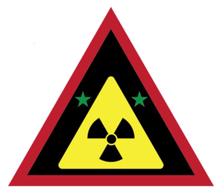
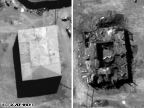
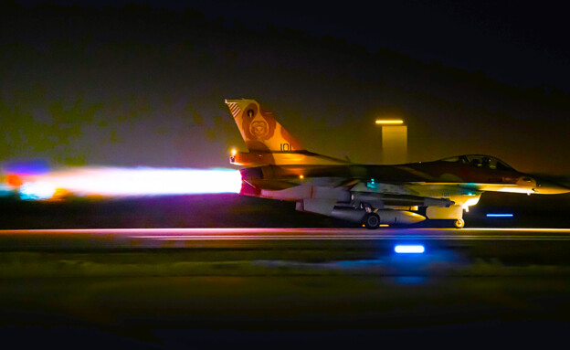
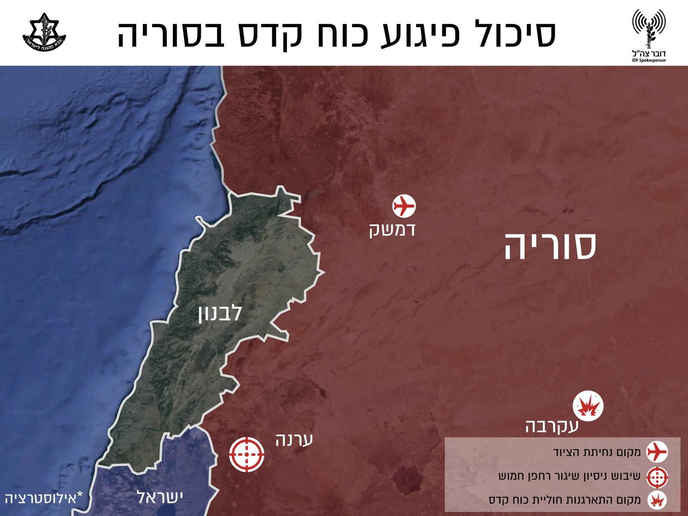

תקיפת הכור הגרעיני בעיראק, הידועה גם כמבצע אופרה ומבצע תמוז, היא מבצע הפצצת הכור הגרעיני העיראקי תמוז (אוסיראק) שהתרחש ב-7 ביוני 1981 ערב חג השבועות ה'תשמ"א על ידי מטוסי חיל האוויר הישראלי. התקיפה בוצעה על ידי רביעיית מטוסי F-16 מטייסת 117 ("טייסת הסילון הראשונה"), רביעייה נוספת של מטוסי F-16 מטייסת 110 ("טייסת אבירי הצפון") ומבנה של שישה מטוסי F-15 לחיפוי. המטוסים המריאו מבסיס חיל-האוויר "עציון" וטסו 1,100 ק"מ מעל ערב הסעודית. בתום הפעולה הושמד הכור העיראקי, הופסקה תוכנית הגרעין העיראקית, והוסר האיום הפוטנציאלי על מדינת ישראל. בני בריתה של ישראל הופתעו מהפעולה, ועימותים דיפלומטיים הביאו לגינוי ישראל באומות המאוחדות ולסכסוך עם ארצות הברית שהתנגדה לפעולה ולשימוש שנעשה בכלי נשק אמריקאיים. בישראל הייתה תקיפת הכור הגרעיני בעיראק לסוגיה מרכזית בקרב מפלגות הליכוד והמערך במערכת הבחירות לכנסת העשירית, שהתקיימה שלושה שבועות לאחר מכן, וייתכן שהכריעה את הבחירות לטובת הליכוד.
תקיפת הכור הרגעיני בסוריה או מבצע מחוץ לקופסא


תקיפת הכור הגרעיני בסוריה או מבצע מחוץ לקופסה[1] היה מבצע צבאי שבוצע על ידי חיל האוויר הישראלי ב-6 בספטמבר 2007, כ"ג באלול ה'תשס"ז, לאחר חצות הלילה ובו הושמד כור גרעיני בסוריה. התקיפה נעשתה תחת מעטה של חשאיות, שנשמר גם לאחריה. כשישה חודשים לאחר מועד התקיפה, הודיעו גורמים בממשל האמריקאי כי היעד שהותקף והושמד היה כור גרעיני לייצור פלוטוניום, שנבנה בסוריה בעזרת קוריאה הצפונית[2]. העיתון הגרמני "דר שפיגל" פרסם כי גורמי מודיעין טענו שהכור בסוריה שימש לסייע לתוכנית הגרעין האיראנית וכי עבדו בו גם מדענים צפון-קוריאניים[3]. העיתון "הארץ" דווח גם כי איראן מימנה את בניית הכור שהופצץ[4].
ב-2011 אישרה גם הסוכנות הבינלאומית לאנרגיה אטומית שהמטרה שהופצצה אכן הייתה כור גרעיני בשלבי בנייה. העיתון "דר שפיגל" דיווח כי שם הקוד של הפעולה היה "מבצע בוסתן"[5], ומקורות אחרים דיווחו כי שם הקוד היה "מבצע אריזונה", אך, כאמור, השם הרשמי היה "מבצע מחוץ לקופסה"[6][7][8]. ב-21 במרץ 2018, לאחר יותר מעשר שנים, אישרה ישראל רשמית שהפציצה את הכור, ופרסמה פרטים על המבצע[8][9].
המלחמה שבין המערכות


המערכה בין המלחמות או מב"ם היא שמה של המערכה שמנהלת מדינת ישראל במאה ה-21[1] באמצעות צה"ל וקהילת המודיעין נגד התעצמות מדינות אויב ובהן איראן וסוריה, וארגוני טרור דוגמת חזבאללה[2] וחמאס וכדי לסכל פעילות התקפית שלהם[3], הכוללת מכלול פעולות חשאיות בחתימה נמוכה[4] ובהן סיכולים ממוקדים, תקיפות אוויריות של חיל האוויר הישראלי[5], לוחמת סייבר ופעולות של יחידות מיוחדות ולוחמי "המוסד"[6]. שמה של מדיניות זו נגזר מכך שהיא מתנהלת בין המבצעים הצבאיים הגלויים והמלחמות שמנהלת ישראל כנגד אויביה[7]. במערכה זו מקפידה ישראל על עמימות ועל יכולת הכחשה.